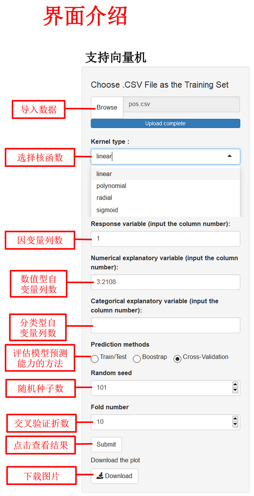
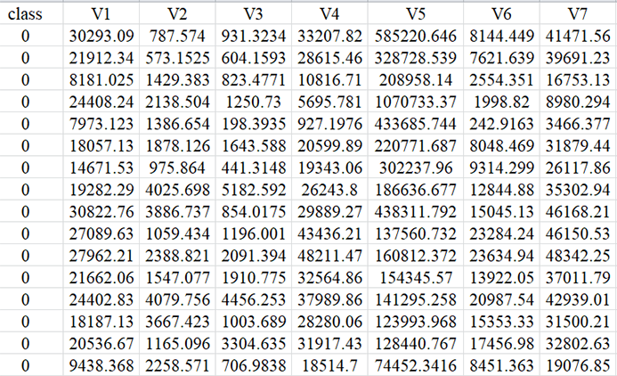
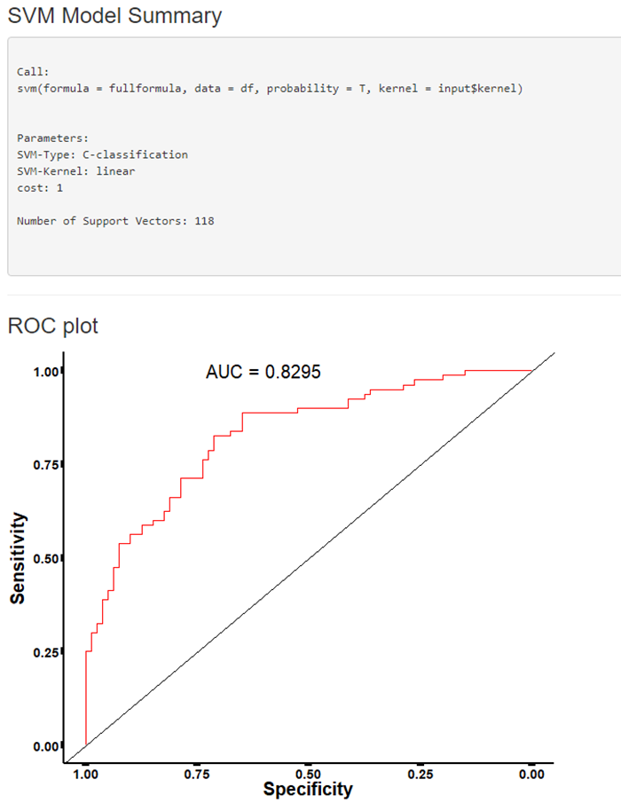

| 支持向量机 | 一、支持向量机简介 | |
| 支持向量机（Support vector machine, SVM）是一种常见有效的分类模型或机器学习方法，该方法能够在高维空间中通过构造线性判别函数从而实现原始空间中的非线性判别。SVM的主要优点包括：能够处理高维、小样本的数据，并能够解决非线性判别问题。
二、数据格式 |
||
|  | ||
|  | ||
| 注： |
||
| 三、输出结果展示 | ||
| 输出结果包括支持向量机模型概况以及预测结果的ROC曲线。 示例如下：  |